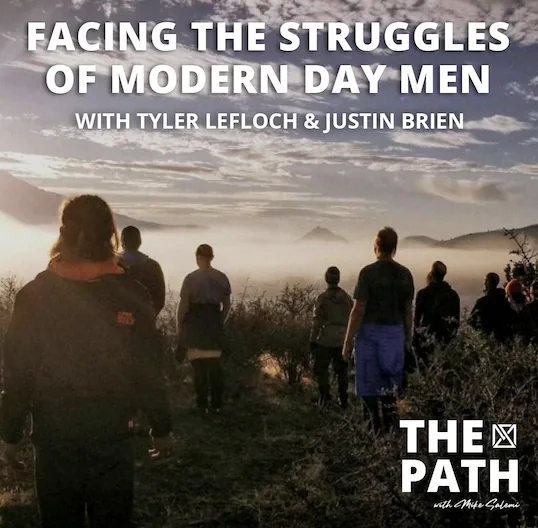

B873 · Facing the Struggles of Modern Day Men
Hi {first_name},
Today’s episode recaps the most recent Men of Movement retreat, which helps men strengthen and balance their power. Justin Brien is back on the show to share his experience as a participant and his major takeaways. Tyler LeFloch is one of the incredible facilitators and is here to share really powerful techniques and exercises he led throughout the experience. This episode focuses a lot on story work, a tool to use for reframing the inner critique and self-doubt that so many are faced with every day. This conversation was a blast, and there are so many valuable tools for massive growth.
In Episode #19 of The Path, Tyler, Justin, and I discuss:
 Click here to listen on Spotify. Click here to listen on Apple.
If you, or a man you know, would like to join our next retreat, happening June 8-11th in Mt. Shasta, CA, click here to set up a discovery call with me.
Wishing you all the best, Mike |